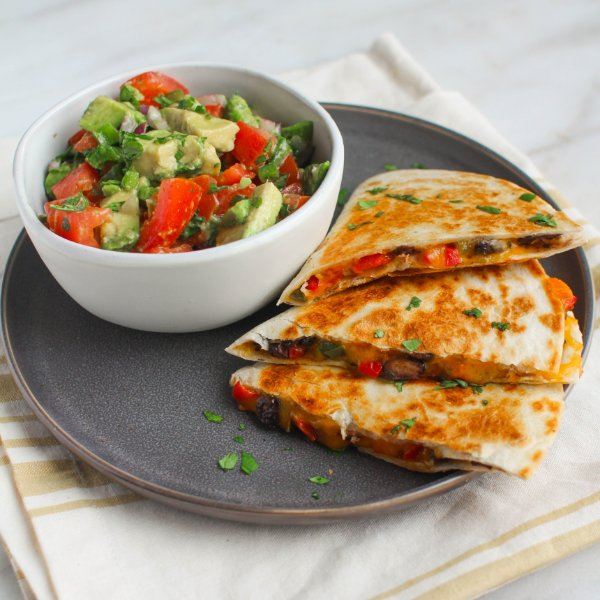

Black Bean & Veggie Quesadillas with Tomato & Avocado Salsa

Total Time
45 min
Nutrition (Per Serving)
844.6 kcalCalories
28.6 gProtein
71.7 gCarbs
51.8 gFat
Full nutrition table
| Calories | 844.6 kcal |
| Total fat | 51.8 g |
| Saturated fat | 16 g |
| Trans fat | 1.5 g |
| Cholesterol | 57.9 mg |
| Sodium | 1067.2 mg |
| Carbohydrates | 71.7 g |
| Fiber | 19.3 g |
| Sugars | 11.4 g |
| Protein | 28.6 g |
| Potassium | 1468.2 mg |
| Calcium | 547.9 mg |
| Iron | 5.8 mg |
| Vitamin A | 1746.3 IU |
| Vitamin C | 122.5 mg |
| Vitamin D | 13.6 IU |
Cookware
Ingredients
- 2avocados
- 1 (15 oz) canblack beans
- 1 (8 oz) blockcheddar cheese
- 1 small bunchcilantro
- 2jalapeño peppers
- 4large flour tortillas
- 1lime
- 2red bell peppers
- 1 mediumred onion
- 4tomatoes
- black pepper
- chili powder
- cumin, ground
- extra virgin olive oil
- salt
Steps
- Wash and dry tomatoes, jalapeños, and cilantro.4 tomatoes
2 jalapeño peppers
1 small bunch cilantro - Medium dice and transfer tomatoes to a medium bowl. Seed, mince, and add ½ of the jalapeños to bowl (save the rest for the quesadilla filling). Halve and pit avocados; scoop out the flesh, medium dice, and add to bowl. Shave cilantro leaves off the stems; discard the stems, mince the leaves, and add ½ to bowl (save the rest for the quesadilla filling). Peel, small dice onion, and add ½ to bowl (save the rest for the quesadilla filling).2 avocados
1 medium red onion - Drizzle ingredients in bowl with olive oil and lime juice; season with salt and pepper. Mix to combine and set aside.2 tsp extra virgin olive oil
juice of 1 lime
½ tsp salt
¼ tsp black pepper - Heat a skillet over medium heat.
- Wash, seed, and small dice bell peppers.2 red bell peppers
- Coat bottom of skillet with oil. Add remaining onion, jalapeño, and bell pepper. Stirring frequently, cook until vegetables have softened, 3-4 minutes.2 tbsp extra virgin olive oil
- Drain and rinse beans.1 (15 oz) can black beans
- Add beans and remaining cilantro to skillet. Then season with chili powder, cumin, salt, and pepper. Stir and cook until beans are warmed through, 2-3 minutes. Transfer to a bowl.1 tsp chili powder
1 tsp cumin
½ tsp salt
¼ tsp black pepper - Grate 2 cups of cheddar.1 (8 oz) block cheddar cheese
- Wash and dry skillet. Heat over medium heat.
- Place tortillas on a flat surface. Layer one half of each tortilla with ⅛ of the cheese, ¼ of the bean mixture, and another ⅛ of the cheese. Fold tortillas over to close.4 large (burrito size) flour tortillas
- Coat skillet with oil. Place 2 of the quesadillas in the skillet, straight edges next to each other. Cook until golden brown on both sides and cheese is melted, 2-3 minutes per side. Repeat with remaining 2 quesadillas.1 tbsp extra virgin olive oil
- Transfer to a cutting board and cut into wedges.
- To serve, place quesadilla on a plate and serve with salsa. Enjoy!